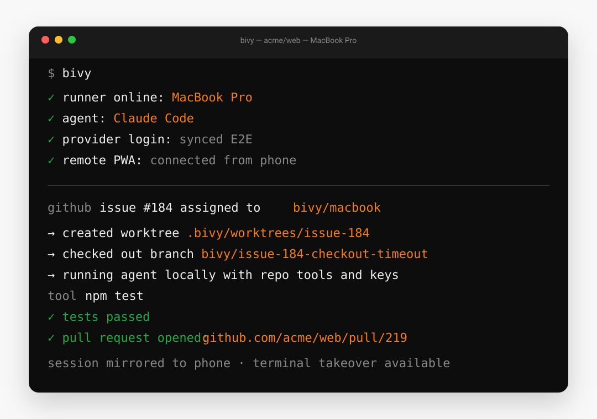

Route coding-agent work to infrastructure you own.
Label a GitHub issue or send a webhook. Bivy routes the job to the machine you choose and the agent you choose, runs it in an isolated worktree, and brings back the pull request. No idle machine? Launch a short-lived runner in your cloud account. Watch, steer, and approve from phone, browser, or terminal.
$ curl -fsSL https://bivy.sh/install.sh | bash
macOS and Linux. Needs Node 22.19 or newer, and the installer sets that up for you if it's missing. Want to read it first? View the script.
Agent-agnostic, end-to-end encrypted, source-available, and self-hostable. Your machine, model credentials, repository, and cloud bill stay yours — no vendor sandbox, repository upload to Bivy, token markup, or single-agent lock-in. Interactive sessions are free and unlimited; no credit card or trial clock.
bivy, a webhook, or a prompt from the app.
Runs Pi, Claude Code, Codex, Cursor, GitHub Copilot, OpenCode, Gemini CLI, Qwen Code, Goose, Aider, and 9 more — or any CLI you point it at.
Why Bivy
What you get that a hosted agent queue can't give you.
If you already use Cursor's cloud agents, Devin, Jules, or the Copilot coding agent, you know the shape: assign work, it runs in the vendor's cloud, on the vendor's model, and a PR comes back. Bivy keeps that loop — but on infrastructure, credentials, and a cloud bill that stay yours, with any agent you like.
| Capability | Hosted agent queues | Bivy |
|---|---|---|
| Where your code runs | The vendor's cloud sandbox | Machines you own |
| Which agent runs the job | One vendor's agent | 19 agents, selected per job |
| Model keys & token bill | Vendor account and metering | Your keys, billed direct |
| Burst capacity | Their metered compute | Ephemeral runners in your cloud |
| Route a job to a chosen machine | No — one pool | Node + agent + model |
| Recover a failed run | Manual retry | Rulesets: retry · reroute · park |
| Drive it from phone & terminal | Web dashboard, varies | Real app + PTY, end-to-end encrypted |
| Self-host & read the source | Closed SaaS | Source-available, self-hostable |
| Pricing | Per-seat + usage metering | Free or $15 flat · unlimited self-host |
The honest trade-off: a hosted queue needs zero infrastructure and bundles inference — Bivy asks you to run a machine (or a cloud runner you own) and bring your own keys. If that's not for you, a hosted queue is simpler, and we say so on the full comparison →
The own-infrastructure agent loop
From incoming work to a reviewed pull request.
Bivy is the coordination layer above the agent CLIs — not another model vendor, and not merely a phone remote. Three moving parts, each one yours.
Route
Choose the node and the agent
Send a GitHub issue or generic webhook to a persistent machine, a specific agent, and the model you want. Set defaults, then override them per job.
Run
Use your hardware — or your cloud
Work runs in an isolated worktree with your keys and toolchain. For burst capacity, launch an ephemeral Fly.io, Hetzner, or AWS runner you pay for directly.
Control
Steer the whole fleet from anywhere
Review diffs, answer questions, approve risky actions, and fork or move a session to another node from the mobile app, browser, or terminal.

A real session running an agent in its own worktree — the same session you can pick up from the app.
GitHub work queue
Label an issue. Get a pull request back.
Work happens on a machine you own, with your local toolchain and your credentials. Bivy's control plane retains routing metadata such as the repository, issue number, node, agent, and status — not the issue body or repository contents.
-
Trigger it in GitHub
Add the
bivylabel to route to your default node, orbivy/mac-minito target one. Mention the Bivy GitHub App in a comment, and choose or default the agent that should take the job. - Bivy queues the work A signed webhook reaches the control plane, which verifies it and records a work item. Redeliveries are de-duplicated.
- Your node claims it Claiming is atomic, so only one machine runs a given issue. The node comments on the issue naming itself, so you can see work has started.
-
The agent opens the PR
It works in a
bivy/issue-<n>worktree, runs your tests, pushes a branch, and opens the pull request. Review it from your phone.
Not just GitHub. A generic signed webhook can start or steer a run the same way — wire a failing CI job, a cron, a Linear ticket, or your own tool straight into an agent on your hardware. See the automation webhook recipes.
Free includes 10 unattended automations every rolling seven days. Interactive sessions never consume them. Go Pro — $15/mo when you want the GitHub, Slack, webhook, and scheduled queues to run without a cap.
New — resilience
Runs that recover themselves.
A rate limit, an exhausted subscription, a full context window, a node that drops — the failures that normally kill an unattended run. A ruleset is a small policy that says what should happen instead: retry, switch to another model or account, or hand it back to you. One policy, applied to both your live sessions and the work queue.
Transient blip or a node that dropped — retry with capped backoff, honoring any retry-after.
Subscription dry? Walk a fallback chain — backup account, cheaper model, different provider — skipping routes with no key.
Auth or context problems need a human — surface it as needs attention, never fail silently.
Classify, don't guess
Matches stable conditions, not error strings
Raw provider errors are sorted into stable codes — rate_limited,
credits_exhausted, context_overflow,
auth_failed — so a rule reads like intent, never a brittle regex on
someone's error text.
Retry · reroute · park
Fall back across models, accounts and providers
Retry transient blips with backoff. Reroute an exhausted subscription down a chain — a backup account, a cheaper model, a different provider — skipping any route the node has no key for. Park anything risky for a human.
Safe by default
Unattended runs stay in the lines
Max attempts and backoff caps keep an automated run from spinning or spending without limit; when a policy runs out it surfaces as needs attention instead of failing silently. Every decision lands on the run's timeline.
A rule reads like this
rules: # a transient blip or a node dropping → just retry, backing off - when: [transport_error, node_offline] action: retry maxAttempts: 3 backoff: { baseMs: 2000, factor: 2, capMs: 60000 } # subscription ran dry → walk a fallback chain; first with valid creds wins - when: [credits_exhausted, rate_limited] action: reroute chain: - { account: work-secondary } # same model, backup account - { model: claude-sonnet } # cheaper model, same provider - { runtimeId: codex, model: gpt-5 } # cross-provider last resort onExhausted: park # needs a human → surface it, never fail quietly - when: [auth_failed, context_overflow] action: park
Live now: the work queue retries and reroutes automatically, and a session can switch to a fallback model mid-conversation and pick up right where it left off. Read the rulesets guide →
The app
The app a hosted agent keeps for itself — for any agent, on your hardware.
This is the mobile companion most agent CLIs don't ship on their own: whichever agent and model you're running — Claude Code, Codex, or any other supported agent — on machines you own, with your own keys, reachable from anywhere. Not a PTY squeezed onto a small screen, but a real chat client — read the transcript, scan the diffs, approve the one thing it's waiting on, and steer the run from a composer built for it, with dictation and attachments.

-
Pick up any session, on any machine
One list across every node you own. A session you started with
bivy runin a terminal is the same session here — open it and keep going. - Type it, paste it, or say it A real composer, not a terminal squeezed onto a small screen. Dictate a prompt instead of thumb-typing it, attach a screenshot straight from your camera roll, and use the agent's own slash commands with autocomplete. A half-written message survives a reload or a jump to another session.
- Only in Bivy Change agent, model, or machine mid-run Swap Claude Code for Codex, move to a bigger model, or fork the whole session onto another node — transcript and uncommitted work included.
- See the work, not a summary Every tool call, command, and file edit, with the diff attached. Expand "read 5 files, ran 10 commands" to check exactly what it touched before you trust it.
- Undo a turn you don't like Bivy takes a git checkpoint around every turn, for every agent. Undo the last one from your phone, or scrub back through the timeline and rewind to any earlier point — so letting an agent run isn't a one-way door.
- Approve from wherever you are Force-push, publish, deploy and sudo always pause for a human, and you can ask to be consulted on far more. When an agent stops — or just asks you a question — it shows up in the app with the command, the risk, and the raw tool input, and one tap unblocks it instead of a run sitting idle until you're back at your desk.
- Know what it's costing A live token and dollar counter on every session, so a long autonomous run never surprises you.
- Installs like an app Add it to your home screen from the browser — no app store, no download, no review queue. Push notifications come find you when a run finishes or stalls, so you don't have to keep the tab open.
Nothing to set up separately. The app is part of the free plan. There's
no download — bivy setup walks you through remote access and prints a
QR code, and scanning it pairs your phone; bivy link prints a fresh
one any time. Pairing is an encrypted handshake with your own node, so the app
streams your session without the relay or our servers being able to read it.
The terminal, when you want it
Chat by default. A full PTY one tap away.
- A real terminal, not a toy A full PTY on the machine — run the tests yourself, poke at a failure, or take over when the agent gets stuck. Reach it from the browser or the phone app.
-
Attach to what's already running
It can attach to an existing
tmux,zellijorscreensession, so your usual workflow shows up in Bivy unchanged. -
Turn any terminal into a Bivy session
bivy shim install claudemakes typingclaudestart the real TUI inside a Bivy PTY — an ordinary terminal session becomes one you can pick up from your phone. -
Start durable, resume anywhere
bivy runkeeps the session alive across detaches and daemon restarts;bivy resumepicks it back up from any device.

What's in 0.1
The session layer around agents you already use.
Bivy does not replace agent CLIs. It runs them in real PTYs and adds what they individually lack: durability, remote access, approvals, and a consistent way to move between them.
Any local agent
Nineteen agents today — and anything else you point it at
Pi, Claude Code, Codex, Cursor, GitHub Copilot, OpenCode, Gemini CLI, Qwen
Code, Goose, Aider, Cline, and more, each driven through its native interface.
ACP-capable agents can use governed per-tool approvals and resume. Any other
command works via bivy run -- ./your-agent.
Durable, movable sessions
Sessions that survive — and fork to any node
Every session has a durable append-only event log and its own git worktree, so detaching your terminal or restarting the daemon never loses it. Fork a running session onto a different agent, a different model, or a different machine, carrying the transcript and any uncommitted work with it.
Keys, synced
Credentials synced across every node, end to end
An encrypted local vault, plus env:// and op://
(1Password) references resolved at start. Bivy-managed provider credentials sync
end-to-end across every node you own — add a key once. Agent-native CLI logins
(Claude Code, Codex, Gemini CLI) may need a one-time sign-in per node.
Also included
No ports, no tunnel, no VPN
Your node dials out to the relay, so nothing listens for inbound connections and there's no firewall rule to add. It works behind NAT, hotel Wi-Fi and corporate networks the same way.
Push notifications
Get pinged when an agent finishes, needs an approval, or hits an error, so you can kick something off and walk away instead of babysitting the terminal.
Approvals wherever you are
Agents run unattended by default. Catastrophic commands and writes outside
the workspace are blocked in every mode, and force-push, publish, deploy and
sudo always pause. Switch to risky or always to be
asked about more, and approve from terminal, browser, or phone.
Ephemeral runners you own
No spare machine, or need burst capacity? Launch a short-lived Fly.io, Hetzner or AWS runner from your own account — you pay the provider directly, and it tears down when the work is done.
One automation queue
GitHub, Slack, signed webhooks, one-time jobs, and recurring schedules route through the same governed queue. Every run returns sanitized evidence: routing, checks, retries, fallback decisions, branch, pull request, and outcome.
Runs on any machine you own
A laptop, a home server, a Raspberry Pi, or a VPS, droplet or EC2 instance you already pay for — if you can install it there, Bivy runs there. Connect as many machines as you like, on every plan.
How it works
Three parts, and only one of them holds your data.
The node is a small daemon on your machine. It owns the workspace,
the credentials, and the agent processes, and it serves an API on
localhost:4317. It holds no account and hosts no web page.
A daemon on your machine. Owns the workspace, credentials, and agent
processes. Serves an API on localhost:4317 — no account, no web page.
Forwards encrypted frames between your node and your devices. Your node dials out, so you never open an inbound port. It routes ciphertext it cannot read.
Ciphertext onlyHolds your account, node list, and session index, and serves the web app. It coordinates metadata and routing only. Use ours, or run your own.
Metadata onlyWhat this buys you. No repository upload, no vendor sandbox, no token markup, and no inbound firewall rule. What it costs you: you operate the machine the agent runs on.
Security
What each part can see.
"Is it secure?" is the wrong question. The one that matters is what each part can actually read. Here's the whole table, nothing hidden.
| Data | Your node | Relay | Control plane |
|---|---|---|---|
| Repository contents | Yes | No | No |
| Prompts and transcripts | Yes | No | No |
| Model API keys | Yes | No | No |
| GitHub repository tokens | Yes | No | No |
| Cloud provider tokens | No | No | No — device-local |
| Session frames in transit | Plaintext | Ciphertext only | Ciphertext only |
| Account, node list, session index | Yes | No | Yes |
| GitHub issue title and body | Fetched at claim | No | Not retained |
| Push notification text | Yes | No | Yes |
Known limits.
Sandbox tiers — read-only, workspace-write,
danger-full-access — are enforced natively by the agents that
support them (Codex, Claude Code, Gemini CLI, Qwen Code). Agents without a native
sandbox are governed at the filesystem, MCP, and network layer, not by an OS jail.
Bivy does not ship its own OS-level jail in 0.1.
GitHub issue and comment content is fetched directly by the claiming node and is not retained by the control plane. Run evidence is allowlisted metadata, not a third-party-audited compliance record.
Push notification titles and bodies pass through the control plane in plaintext, and can contain session and terminal names. Everything else in a session stays encrypted end to end.
Credential sync between your own nodes covers Bivy-managed provider keys. Agent-native logins — Claude Code, Codex, Gemini CLI — remain per-machine.
The default approval mode is autonomous: agents act without
per-action prompts. The hard floor still applies in every mode — catastrophic
commands and writes outside the workspace are refused, and force-push, publish,
deploy and sudo pause for a human. Set
BIVY_APPROVAL_MODE=risky if you want to be asked about every
shell command and file edit.
Bivy is 0.x software. Interfaces and behaviour can change between releases.
Read the full security model, including device pairing, key handling, and revocation.
Source available
Yours to read, fork, and self-host.
Bivy Core — the node daemon, CLI, runtime adapters, web client, relay, and the baseline control plane — is published under the Functional Source License (FSL-1.1-ALv2). You may use, modify, and self-host it for any purpose except offering a competing service. Each release becomes Apache-2.0 two years after it ships.
Remote access is not locked to us. Point the node at your own relay and control plane and nothing about the product changes.
# install and run the guided setup $ curl -fsSL https://bivy.sh/install.sh | bash # run any agent as a durable, reachable session $ bivy run codex $ bivy run aider $ bivy run -- ./my-agent # pick a sandbox tier $ BIVY_SANDBOX=read-only bivy restart # list and resume from anywhere $ bivy sessions $ bivy resume # point at your own infrastructure $ bivy relay:setup --relay wss://relay.example.com \ --control-plane https://bivy.example.com
Self-hosting is unsupported. No SLA, community best-effort through GitHub issues. The node and CLI run locally with no server stack. Self-hosting the relay and control plane means you operate that stack — TLS, backups, upgrades, hardening — yourself.
Pricing
Explore interactively for free. Pay when Bivy runs the queue.
CLI, phone, and browser sessions are free and unlimited. Free also includes 10 unattended automations every rolling seven days across GitHub, Slack, webhooks, and schedules. Pro makes automation unlimited for a flat $15/month. Your model and infrastructure bills stay direct — no token or compute markup.
Free
No credit card, no trial clock.
Use every agent and control surface without a trial clock.
- Any of 19 coding agents — or your own
- Route GitHub issues & webhooks to your machines
- Durable sessions, worktrees & rulesets
- Ephemeral runners in your own cloud
- Phone, browser & terminal app — all included
- Push notifications, approvals & sandboxes
- Unlimited machines and devices
- Unlimited interactive sessions
- 10 unattended automations / rolling 7 days
- Community support
Pro
Billed monthly · cancel anytime.
For a queue that keeps working while you do something else.
Everything in Free, plus
- Unlimited unattended automation
- GitHub, Slack, webhook & scheduled runs
- Unlimited fallback reruns and BYO-cloud queue jobs
- Sanitized outcome reports for every run
- Email support
Team
Founding-customer pricing · onboarding included.
Standardize agent work across your own fleet.
Everything in Pro, plus
- Shared routing across your team's nodes
- Shared rulesets & fallback routes
- SSO, roles & audit export shaped with design partners
- Onboarding & deployment review
- Priority support
Community support means public GitHub issues, with no guaranteed response. Self-hosting is unsupported — community best-effort only — but a control plane you run yourself has no run limit at all.
Documentation
Start here.
Getting started
Reference
Route & automate
Operating it
FAQ
Does my code ever leave my machine?
Bivy does not receive your repository. Agents run on the node you control; the relay forwards encrypted frames, and the control plane holds routing metadata, not files, prompts, transcripts, or model keys. The claiming node fetches GitHub issue content directly. Your chosen model provider still receives whatever its agent sends, under that provider's terms.
How is this different from Cursor's cloud agents, Devin, or the Copilot coding agent?
Those run in the vendor's cloud, on the vendor's agent and metering. Bivy runs the same issue-to-PR loop on machines you own (or a cloud runner in your own account), with any of nineteen agent CLIs, using your keys. See the full comparison.
What counts toward the free automation allowance?
Only unattended queued work: GitHub, Slack, signed webhooks, and scheduled jobs. Free includes 10 every rolling seven days, plus a grace job; capacity returns as older jobs age out. Sessions you start interactively from the CLI, phone, or browser are unlimited on every plan. Pro and self-hosting remove the automation cap.
What are rulesets?
A ruleset is a small policy that decides what happens when a run fails. Instead of dying on a rate limit, an exhausted subscription, a full context window, or a dropped node, Bivy can retry with backoff, reroute down a fallback chain (a backup account, a cheaper model, a different provider), or park the run for a human — the same policy across both the work queue and live sessions. See the rulesets guide.
What do I actually need to get started?
A Mac or Linux machine you can leave running, and a login for whichever model
you want to use. Node 22.19+ is required and the installer sets it up if it's
missing. bivy setup then walks you through the rest — workspace,
model sign-in, remote access, and a background service so it comes back after a
reboot. Interactive use is free and unlimited, there's no credit card, and
bivy uninstall removes the service and config if you decide against
it.
No spare machine — can I still use it?
Yes. Bivy can launch a short-lived runner in your own Fly.io, Hetzner, or AWS account for a session or a queued job. You supply a scoped token, you pay the provider directly, and the runner tears down when the work is done — Bivy never becomes your compute or inference provider.
Is the phone app in the App Store?
No, and it doesn't need to be. It's an installable web app: open your control plane URL and add it to your home screen — on iPhone that's Safari's Share → Add to Home Screen, and on Android or desktop it's the browser's own install button. After that it launches full-screen like any other app. Nothing to download, and updates arrive without a store review.
Do I need to open a port or run a tunnel?
No. Your node makes an outbound connection to the relay, and your devices attach through it. This works behind NAT and corporate firewalls without any inbound rule.
Which agents are supported, and how well?
Nineteen are in the picker. Pi and Claude Code are the most complete. Codex, OpenCode, Gemini CLI and Qwen Code are solid. Other agents work but have gaps inherited from upstream — Aider and Crush cannot resume a session, for instance. The support matrix lists exactly what each one can do.
Do you mark up model tokens?
No, and we do not resell inference. You bring your own provider keys or subscription logins and they stay on your node. Paid plans cover the hosted relay, remote access, push notifications, and the work queue.
Can I self-host all of it?
Yes — node, relay, and control plane are all in the repository, and the CLI takes flags to point at them. It is unsupported: no SLA, community best-effort. You own TLS, backups, upgrades, and hardening.
What does "source available" mean here?
The Functional Source License lets you use, modify, and self-host the code for any purpose except offering a competing commercial service. Two years after each release, that version converts to Apache-2.0. It is not an OSI-approved open source licence, and we do not describe it as one.
How stable is 0.1?
It is the first public release of 0.x software. The core loop — run an agent, keep the session, reach it remotely, approve actions — is solid and used daily. Newer surfaces such as credential sync between nodes are rougher. Interfaces can change between releases.
Put your agent queue on infrastructure you trust.
One command to install. Interactive sessions are free and unlimited, with no credit card and no repository upload to Bivy. Connect GitHub, Slack, a webhook, or a schedule when you're ready; go Pro when the unattended queue becomes part of your week.
$ curl -fsSL https://bivy.sh/install.sh | bash